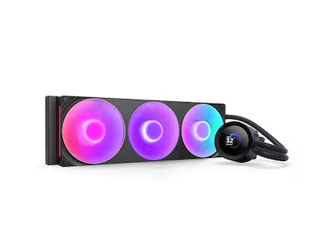
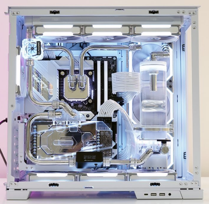

부품 고르는 법
수냉
수냉쿨러는 CPU나 GPU에서 발생하는 열을 액체(냉각수)를 이용해 식히는 방식의 쿨링 시스템입니다. 일반적으로 워터블럭, 펌프, 튜브, 라디에이터, 그리고 팬으로 구성되어 있으며, 워터블럭은 CPU에 밀착되어 열을 흡수하고, 이 열은 냉각수를 통해 라디에이터로 이동되어 방출됩니다. 라디에이터에 장착된 팬은 열기를 밖으로 내보내거나 차가운 공기를 유입시켜 냉각 효과를 극대화합니다. 수냉쿨러는 공랭 쿨러보다 발열 제어가 뛰어나고 조용하며 고사양 시스템이나 오버클럭 환경에 적합하지만, 설치가 다소 복잡하고 가격이 높은 편입니다. 하지만 최근에는 조립하기 쉬운 일체현수냉의 제품이 많이 출시되어서 조립이 보다 간편해졌습니다. 또한 누수 가능성은 낮지만, 만일의 경우를 대비해 믿을 수 있는 제조사의 제품을 사용하는 것이 좋습니다.
수냉쿨러는 크게 커스텀 수냉과 일체형 수냉으로 나뉘며, 각각의 장단점이 뚜렷합니다. 일체형 수냉(AIO, All-In-One)은 워터블럭, 펌프, 라디에이터, 튜브가 하나로 구성된 제품으로, 제조사에서 완전히 조립되어 출고되기 때문에 초보자도 손쉽게 설치할 수 있습니다. 유지보수가 거의 필요 없고, 비교적 가격도 저렴하여 가장 많이 사용되는 수냉 방식입니다. 다만, 부품을 개별적으로 교체하거나 확장하기는 어렵고, 고장 시 전체 제품을 교체해야 하는 단점이 있습니다.반면에, 커스텀 수냉(Custom Loop)은 사용자가 펌프, 워터블럭, 튜브, 라디에이터, 리저버(냉각수 저장통) 등을 직접 선택하고 조립하는 방식으로, 성능이나 외관 모두 자신만의 방식으로 세밀하게 구성할 수 있다는 점에서 하이엔드 유저들이 선호합니다. 그래픽카드나 메모리까지 쿨링 대상에 포함시킬 수도 있고, RGB 튜닝과 독창적인 디자인도 가능합니다. 하지만 설치가 매우 복잡하고, 누수 관리 및 정기적인 냉각수 교체 등 유지보수가 필요하며, 비용 또한 상당히 높습니다.
| 크기 (mm) | 팬 개수 | 설명 |
|---|---|---|
| 120 | 1 | 소형 케이스에 적합한 1팬 라디에이터 |
| 240 | 2 | 중형 케이스에 적합한 2팬 라디에이터 |
| 280 | 2 | 140mm 팬 2개 사용, 중고급형 케이스용 |
| 360 | 3 | 고성능 시스템에 적합한 3팬 라디에이터 |
| 420 | 3 | 140mm 팬 3개 사용, 대형 케이스용 |
| 480 | 4 | 120mm 팬 4개, 최상급 성능용 |
| 560 | 4 | 140mm 팬 4개, 최고급 대형 시스템용 |